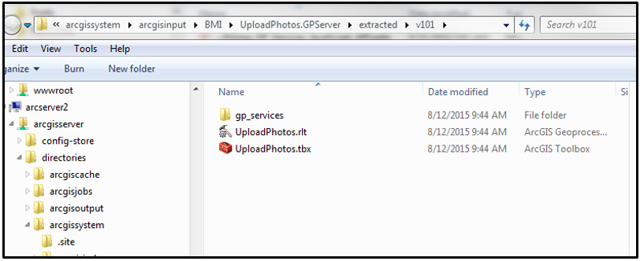

Using Geoprocessing Services with the ArcGIS JavaScript API
Caleb Mackey & Nate Christ
What is a GeoProcessing Service?
- A Geoprocessing Service (GP Service) provides data management, conversion, and analytical capabilites through the ArcGIS REST API
- A GP Service represents a published toolbox with a Python or ArcObjects based Script tool or model.
- This is useful because the client does not need to have ArcGIS Desktop installed because the process is ran by the ArcGIS Server in the backend via request made through HTTP protocol
Creating a GP Service
- In order to create a GP Service, you must publish the results of tool that has been ran successfully in ArcMap/Catalog/ArcGIS Pro
- ArcGIS Desktop: After successfully running tool, open Geoprocessing Options > Results > right click tool result > Share As > Geoprocessing Service
- This will create a toolbox locally on the server (arcgissystem/arcgisinput folder) with a single tool inside. The Python script will be copied here as well

Server-Side Python Script
- During publishing, Esri uses an internal validation process to check file paths in variables to ensure they're registered with data store.
- before publishing a GP service, make sure any necessary file paths are available to the ArcGIS Server's Data Store
- If any data is copied to the server, the 'g_ESRI_variable_x' is changed to that path on the local server